The general solution in the standing wave form (2) for equation (3) is the function
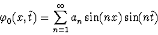
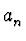
. We have to find such coefficients that the function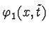
is a periodic solution for equation (4). If we select as a double sum: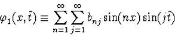
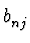
, then equation (4) can be presented in the form of Fourier series: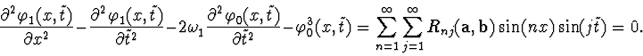
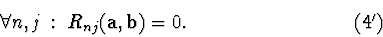
This system has a subsystem of the equations
in Fourier coefficients of the function
 :
:
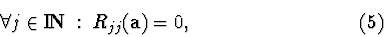
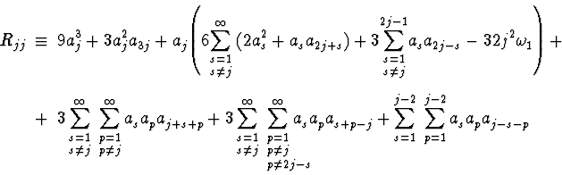
We have obtained the necessary and sufficient condition of the existence of
periodic solutions for equation (4): there exists a periodic function
,
satisfying equation (4), if and
only if the Fourier coefficients of the function
 satisfy system (5).
satisfy system (5).
Coefficient
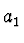
is a parameter determining the oscillation amplitude. In fact, let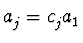
and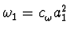
, then all polynomials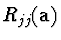
are proportional to a13: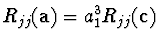
and, therefore, the coefficient can be selected arbitrarily.